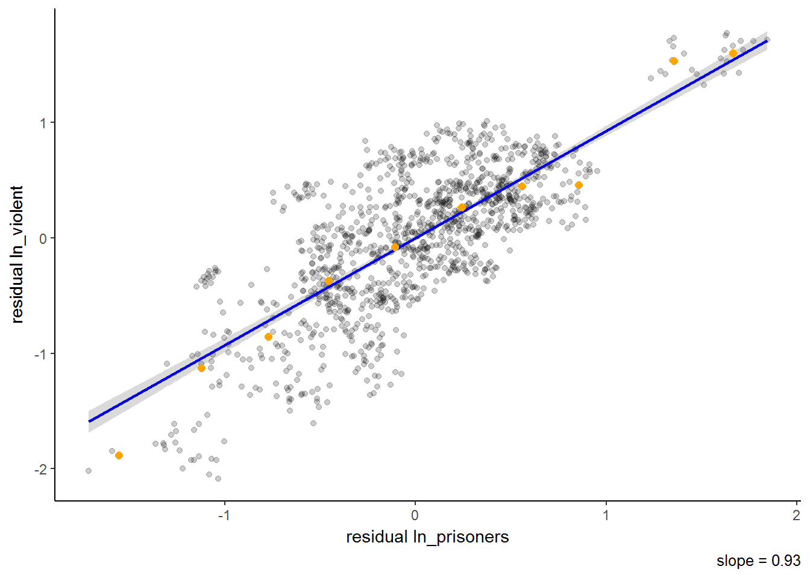

I was trying to find an R package that provides features similar to Stata’s binscatter user written program but there does not appear to be any good substitutes around. Hence, I decided to write a function that replicates it in R. Turns out it actually took longer than I thought and there are still many bugs to fix but the developmental version is worth sharing. It can be downloaded from my Github page.
The main features I wanted to include were:
1. Scatter of the binned data
2. Scatter of the underlying data
3. Ability to partial out fixed effects
4. Correct handling of standard errors
I find a plot of the underlying data very useful to visualise the dispersion and for most intermediate sized datasets, I believe the additional clutter is worth the information trade off.
Partialling out the effect of other control variables is done following the FWL-theorem so the resulting graph is a plot of residuals of the dependent variable on the residuals of the variable of interest.1
The treatment of standard errors by ggplot using the geom_smooth function disappointed me. It makes a plot assuming homoskedastic errors and there are no good ways to modify that. Turns out actually getting robust or clustered standard errors was a little more complicated than I thought.
This function uses felm from the lfe R-package to run the necessary regressions and produce the correct standard errors. While felm is much faster on large datasets, it lacks a predict function to calculate the confidence interval and I had to manually hard-code it.
Here’s a short walk-through on using the function. First copy the binscatter.R file to the working directory and load it using source("binscatter.R")
Formulas fed into the function follows the format set out in felm: y ~ x1 + x2 | fe1 | 0 | cluster. y is the dependent variable, x1 and x2 are independent variables including the variable of interest, fe1 is a fixed effect term or factor variable that will be partialled out, 0 is for instruments, cluster is name of the variable to cluster over for standard errors.
And here are some sample plots made on the Guns dataset from Stock and Watson (2007), which can be imported from the AER R-package. Do higher incarceration rate lead to less violent crimes? For a simple binned plot with 2 variables, one has to set partial=FALSE. With more variables partial has to be set to TRUE.
data("Guns", package = "AER")
Guns$ln_violent <- log(Guns$violent)
Guns$ln_prisoners <- log(Guns$prisoners)
binscatter(formula="ln_violent ~ ln_prisoners", key_var = "ln_prisoners",
data=Guns, bins=10, partial=FALSE)
The number of prisoners is positively correlated with violent crimes but that might be due to differences across year or states. Let’s try to partial out year fixed effects.
binscatter(formula="ln_violent ~ ln_prisoners + year" , key_var = "ln_prisoners",
data=Guns, bins=10, partial=TRUE)
Currently the function needs at least one other control variable in the first segment of the regression for it to work. The key variable or variable of interest should also not be the rightmost due to some substring quirks. Now we partial out state fixed effects as well.
binscatter(formula="ln_violent ~ ln_prisoners + year | state" , key_var = "ln_prisoners", data=Guns, bins=10, partial=TRUE)
Finally, let us cluster standard errors by state and increase the size of the bins.
binscatter(formula="ln_violent ~ ln_prisoners + year | state | 0 | state " , key_var = "ln_prisoners",data=Guns, bins=20, partial=TRUE)
For categorical variables this is equivalent to the effect of demeaning both the dependent variable and the variable of interest within each category.↩